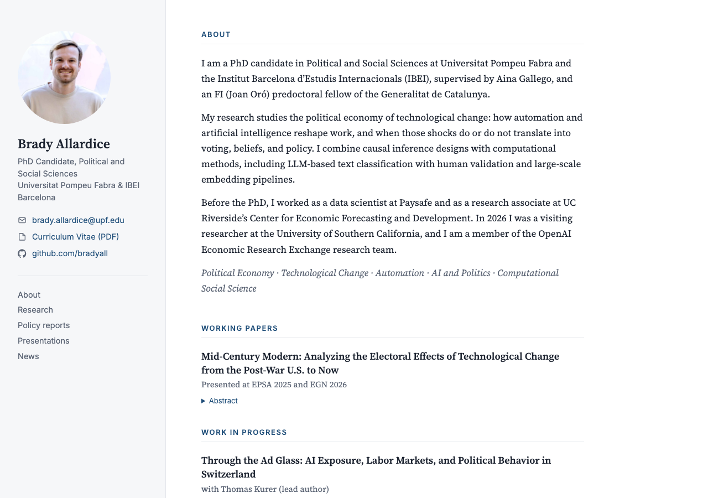
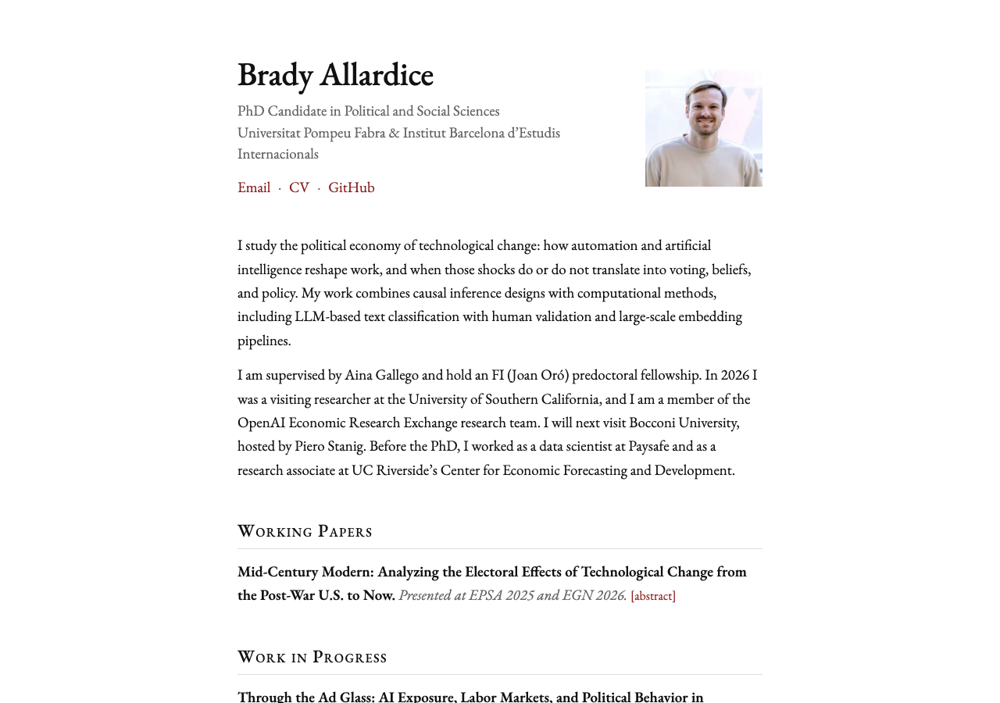
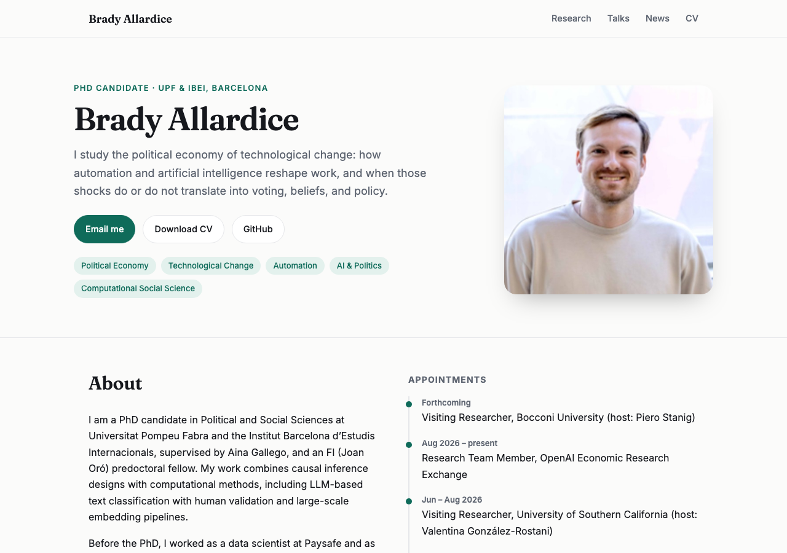
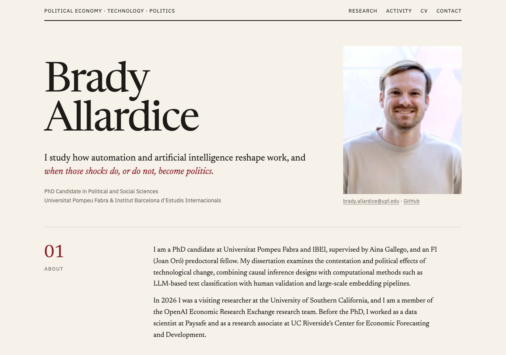

All four use the same content from the CV. Click a preview to open the full page, then resize the window to see the phone layout. Colors, fonts and sections can be mixed across options.

Photo, affiliation and links in a sticky left column; research, reports, talks and news on the right. Serif body, navy accent. Abstracts collapse behind toggles.
The most common academic format (close to al-folio and academicpages). Familiar to hiring committees and easy to scan.
Open full page →
One narrow column in EB Garamond, small photo beside the name, small-caps section headings, [abstract] toggles. No decoration.
The style of many economics and political science faculty pages. Loads instantly and reads like a document.
Open full page →
Sticky top navigation, hero with large photo and buttons, research-field tags, paper cards with status badges, appointment timeline. Switches to dark mode with the visitor’s system setting.
Suits the computational and AI side of your profile. Closest to a lab or industry-research page.
Open full page →
Journal-inspired: oversized serif name, one-sentence research statement, numbered sections (01 About, 02 Research, 03 Activity) on warm paper with a burgundy accent.
The most distinctive of the four. Leads with the research question rather than the credentials.
Open full page →